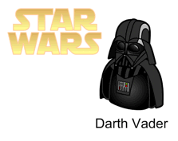

— Люк, я твой отец!
10.11.2007
Продолжаем приключение замечательной фигуры User.

Скачать:
Двадцать седьмая статья
07.11.2007
Наконец-то дошли руки и до новой статьи. Продолжаем тему ошибок и их героического преодоления.
«Информационный катарсис»
99 шагов назад
22.10.2007
В Visio можно установить, чтобы программа помнила до 99 ваших последних действий (Tools>Options>Tab General>Undo level). В обычной работе эта возможность не нужна, и даже сомнительна, т.к. требует лишней памяти. Но если вы что-то делаете «с нуля», то может оказаться, что 39 шагов назад вы допустили ошибку. Поверьте, иногда случаются ошибки, когда проще перерисовать, чем исправить. И иногда 40 шагов назад легко исправят ситуацию. Хотя, чаще всего, по работе мне не приходится делать и 20 шагов за одну правку файла, но то, что я выставил 99 шагов, меня иногда просто избавляло от многих минут ненужной работы.
Так что мой вам совет, если операционной памяти на компьютере достаточно, выставите программе помнить 40-60 шагов, лишним не будет.
«Программная интуиция»
19.10.2007
После, более чем, 10-летнего опыта работы с Visio, количественные знания перешли в другое состояние, в качественное. Работа с приложением начинает носить прикладной характер, нежели исследовательский. С течением времени складывается модель поведения программы, и тогда уже не пользователь работает с программой, а две модели поведения работают друг относительно друга. С течением времени, чего я только не делал с помощью Visio: от изготовления рекламы, до «шкурок» для ICQ.
Уже изучены слабые и сильные стороны приложения и тогда наступает такой момент, когда ты уже знаешь, что можно сделать с помощью программы, не потому, что ты это пробовал, экспериментировал, а потому что модель поведения (приобретенная) дает прогноз относительно того или иного решения, до его реализации посредством самой программы.
В обычной жизни мы называем это интуицией. :-)
Ностальгия без слов
Splashes Visio
Снова в эфире
18.10.2007
Сайт снова в строю. Предстоит многое вспомнить, многое изучить заново. Осень не может длиться вечно.
Итак, сейчас закончу приводить в порядок сайт и начну выкладывать статьи и другие полезные материалы.
В начало сайта Автор: Ничков Алексей (Digitall)